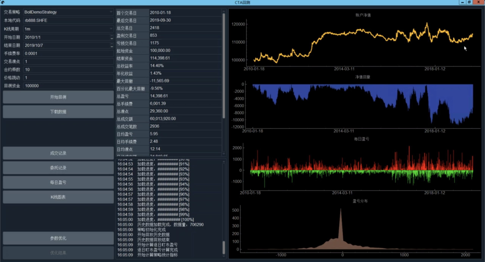
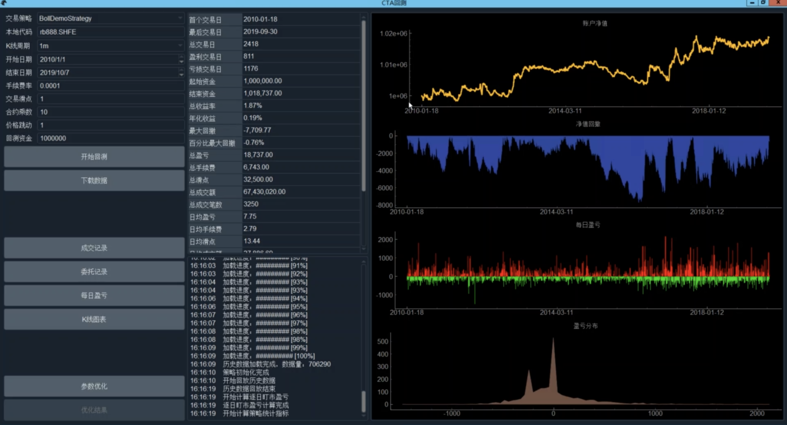
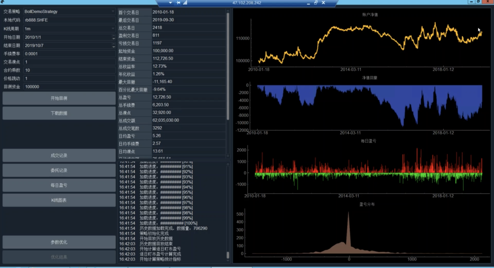
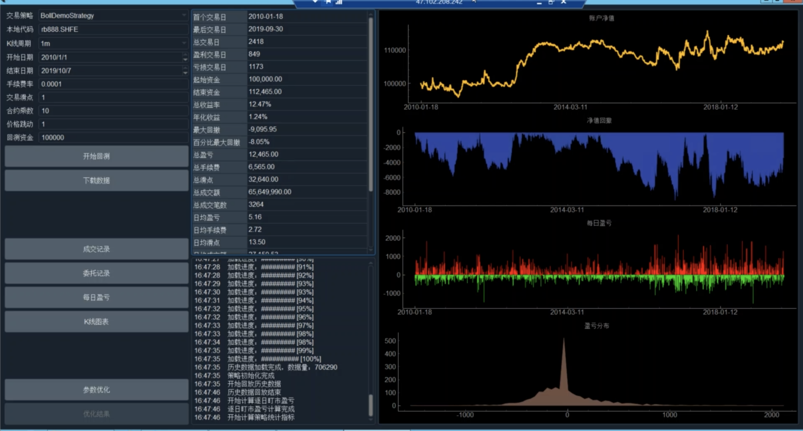

全实战进阶系列-CTA策略, 平台小鹅通，by 用 Python 的交易员
BoolDemoStrategy
BollDemoStrategy，一个跑在 15 分钟 K 线上的策略
策略参数变量定义
1 | class BollDemoStrategy(CtaTemplate): |
开平仓逻辑
1 | def on_15min_bar(self, bar: BarData): |
回测结果，不太好

固定价格止损
添加参数
1 | class BollDemoStrategy(CtaTemplate): |
在下单逻辑中加入止损
1 | def on_15min_bar(self, bar: BarData): |
加入止损后，回测结果有所提升

可变止损
按百分比止损
替换
1 | fixed_sl = 20 |
为
1 | percent_sl = 0.01 |
开平仓相应的替换
1 | self.long_sl = self.long_entry * (1 - self.percent_sl) |

按技术指标来止损
使用 atr 的一个倍数止损
在最原始的 boll 策略的基础上，添加参数
1 | class BollDemoStrategy(CtaTemplate): |
对于下单逻辑, 计算 atr
1 | self.atr_value = am.atr(self.atr_window) |
止损逻辑替换为
1 | self.long_sl = self.long_entry - self.atr_value * self.atr_multiplier |

移动止损
根据当前K线的最高价，不断调整止损点位
定义参数的变量
1 | class BollDemoStrategy(CtaTemplate): |
下单逻辑
1 | def on_15min_bar(self, bar: BarData): |
止损进阶
整合多个出场价格，锚定真实的开仓价格
定义变量和参数
1 | class BollDemoStrategy(CtaTemplate): |
收到成交回报，计算止盈点位
1 | def on_trade(self, trade: TradeData): |
下单逻辑
1 | def on_15min_bar(self, bar: BarData): |